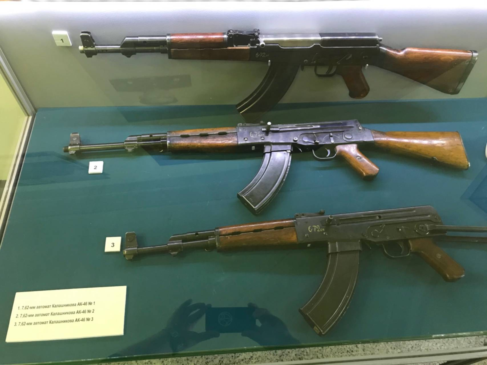

• В ходе войны Советский Союз столкнулся с необходимостью создания эффективного стрелкового оружия, способного вести бой в различных условиях. В то время основным оружием пехоты были винтовки, которые не всегда обеспечивали необходимую огневую мощь и скорость ведения огня. Опыт боевых действий показал, что автоматическое оружие, такое как немецкий MP-40 и американский Thompson, имело значительные преимущества в ближнем бою. Это стало стимулом для разработки нового типа оружия. В 1941 году, будучи раненным на фронте, Калашников начал разрабатывать концепцию нового стрелкового оружия. Он стремился создать автомат, который был бы надежным, простым в использовании и производстве. В 1944 году Калашников представил свой первый прототип автомата — АК-47 (автомат Калашникова образца 1947 года). Он основывался на принципах работы немецкого автомата STG-44 и других образцах оружия того времени. Прототипы АК-47 прошли ряд испытаний, во время которых были выявлены как сильные, так и слабые стороны конструкции. Основное внимание уделялось надежности, простоте эксплуатации и возможности массового производства. В 1949 году автомат Калашникова был официально принят на вооружение Советской армии. Это событие стало поворотным моментом в истории стрелкового оружия. С начала 1950-х годов началось массовое производство АК-47. Конструкция автомата позволяла легко производить его на различных заводах, что способствовало его распространению. АК-47 быстро стал символом советского оружия и был экспортирован в множество стран по всему миру. Он использовался в различных конфликтах и войнах, становясь одним из самых популярных видов стрелкового оружия. На основе АК-47 были разработаны различные модификации и улучшения, такие как АКМ (модернизированный автомат) и другие варианты. Эти модификации улучшали характеристики оружия, такие как точность, вес и удобство использования. АК-47 стал не только оружием, но и символом борьбы, революции и сопротивления. Он изображался в фильмах, литературе и искусстве, что способствовало его культовому статусу.
Автомат Калашникова на выставке:

Автомат Калашникова в музее:
Для дополнительной информации вы можете посетить следующие сайты:
Вы можете связаться со мной по электронной почте: ПОЧТА